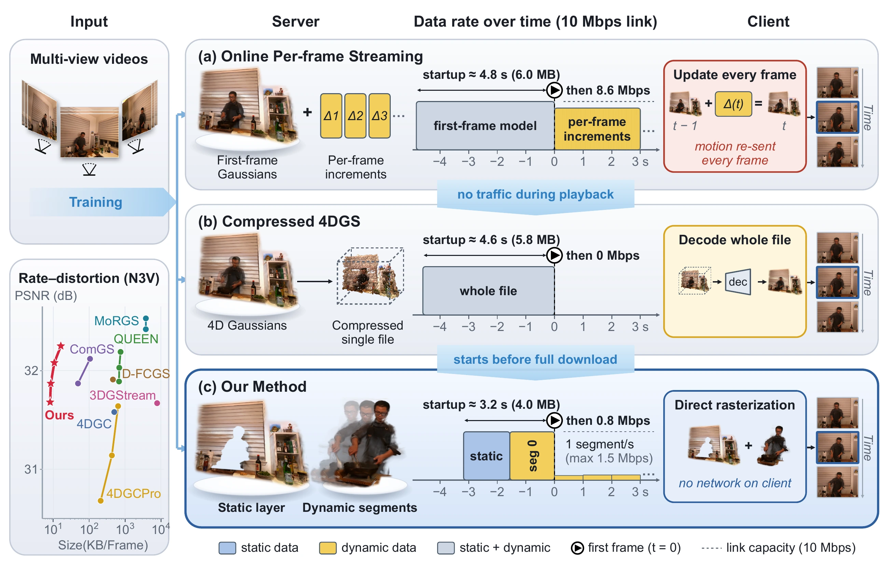
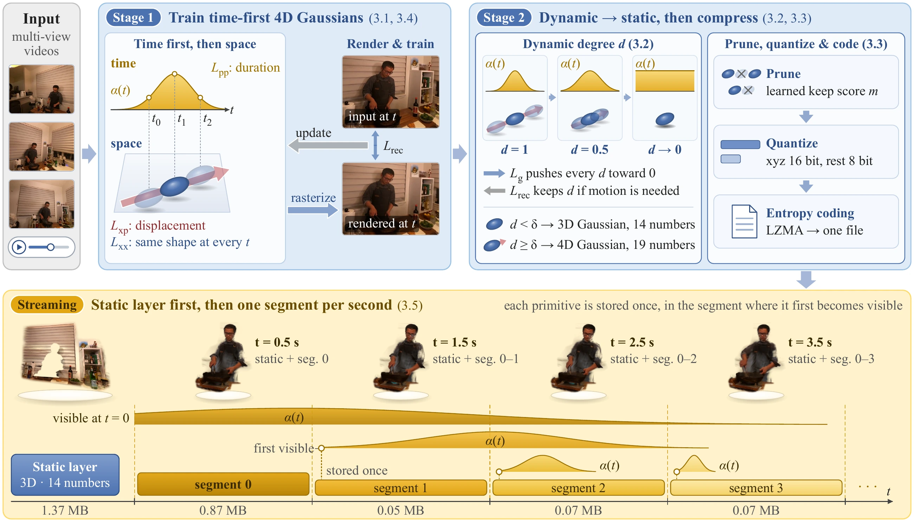
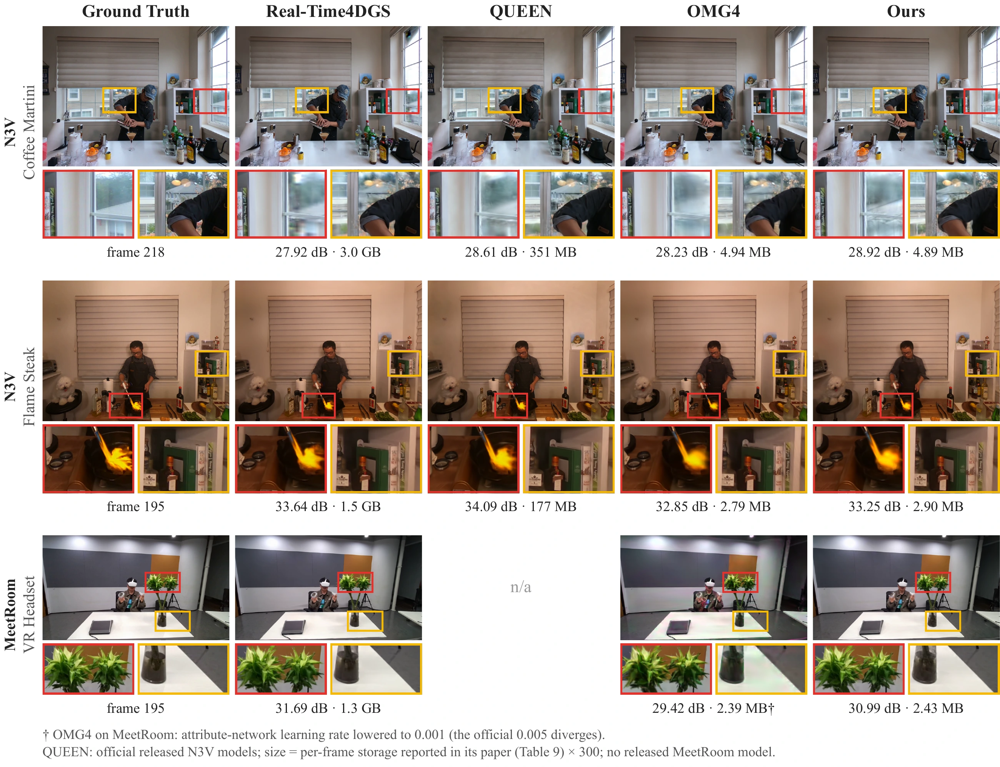

TiFi-GS: Time-First Gaussian Splatting for Compact and Streamable Dynamic Scenes
Separate duration, motion and shape.
Compress the scene. Transmit each primitive once.

Abstract
Dynamic scenes contain substantial static content, yet a fully dynamic Gaussian representation can retain unnecessary temporal parameters. TiFi-GS reorganizes the four-dimensional Gaussian covariance into separate blocks for duration, motion displacement and spatial shape, while preserving the representational capacity of 4D Gaussians. A learned motion degree encourages suitable primitives to become static; pruning and quantization-aware training further reduce storage.
The compressed representation is organized into a static layer and dynamic segments assigned by first-visibility time. Each primitive is transmitted once and rasterized directly after arrival. On the six-scene N3V benchmark, the largest reported tier achieves 32.25 dB with a 4.88 MB model at 315 rendered frames per second. The method targets on-demand delivery of pre-captured sequences trained offline.
Recorded demonstrations
Moving-camera rendering · Early-October models
These ten-second recordings render cut_roasted_beef and coffee_martini while the camera moves smoothly left and right in 3D. They use early-October models and illustrate transmission simulations, rather than the final segmented-transmission evaluation below. These are recorded videos, with no interactive 3D viewer.
Method
Time comes first in the covariance factorization. This separates a primitive's temporal extent and motion displacement from its spatial shape, so changing one does not require changing the others.

- Represent time explicitly. Train 4D Gaussians with separate duration, displacement and shape blocks. The displacement expresses motion over one temporal standard deviation.
- Remove temporal redundancy. Learn which primitives can become static and which can be pruned, while adapting parameters to quantization. Eligible static primitives store 14 scalar parameters instead of 19.
- Transmit by first visibility. Send the static layer and first segment before playback. Later segments contain only dynamic primitives that first become visible in that second; received primitives remain available.
Quantitative results
Mean over all six N3V scenes, each with 300 frames. The four rate tiers trade reconstruction quality against storage. Rendering speed is measured on the held-out camera at 1352 × 1014 pixels with exclusive use of one NVIDIA RTX 3090.
| Rate tier | PSNR (dB) | Rendering (frames/s) | Model (MB) |
|---|---|---|---|
| TiFi-GS L | 32.25 | 315 | 4.88 |
| TiFi-GS M | 32.08 | 353 | 3.22 |
| TiFi-GS S | 31.87 | 384 | 2.57 |
| TiFi-GS T | 31.68 | 384 | 2.46 |
PSNR: peak signal-to-noise ratio in decibels; higher is better. Rendering: frames rendered per second; higher is faster. Model: compressed single-file size in megabytes, including decoding data; smaller is less storage. All values are positive absolute measurements.
Protocol B. Each frame is timed ten times; take its median, then the inverse of the mean time over 300 frames. The L tier reports the best of three runs per scene; M, S and T each use one run. Checkpoints are selected on the test view, which can bias quality upward. These are selected-checkpoint results, not independent multi-run means.

Transmission after startup
The initial download remains substantial: the static layer plus segment zero accounts for 80.7–84.2% of the segmented representation. The benefit is the smaller amount of additional data needed during sequential playback.
| Rate tier | Startup (MB) | Later data (MB/s) | Total (MB) |
|---|---|---|---|
| TiFi-GS L | 3.972 | 0.106 | 4.922 |
| TiFi-GS M | 2.701 | 0.060 | 3.240 |
| TiFi-GS S | 2.173 | 0.047 | 2.594 |
| TiFi-GS T | 2.087 | 0.043 | 2.478 |
Startup: megabytes required before frame zero. Later data: mean megabytes per second over one-second segments 1–9, at 30 playback frames per second. Total: sum of all independently compressed segments and the static layer; it is slightly larger than the single-file model. Smaller values mean less data. The same run and checkpoint-selection scope applies as above.

At the M tier, TiFi-GS requires more startup data than the reproduced OMG4 model: 2.701 versus 2.377 MB. Subsequent data averages 0.060 versus 0.156 MB/s. Lower sustained traffic therefore does not imply a universal startup advantage.
Scope and limitations
- Offline training. Training uses the entire captured sequence. The method supports on-demand transmission, not live streaming.
- Sequential access. Starting at an arbitrary time requires the static layer and all preceding dynamic segments. It is not independent random access.
- Short-sequence evidence. The transmission study covers ten-second sequences. Sustained data rates on longer sequences have not been measured.
- Selected checkpoints. Test-view checkpoint selection and best-of-three reporting for L limit interpretation. Other tiers are single runs; the table does not quantify their run-to-run uncertainty.
- Comparison scope. The matched-segmentation study uses OMG4 based on Real-Time4DGS, a constant-bandwidth model and unequal reconstruction quality. It excludes decoding time and does not establish superiority over all online or compressed representations.